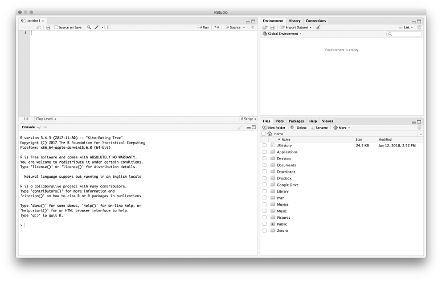

2+21 R 소개
1.1 개요
이 장에서는 이 책 전반에 걸쳐 사용하게 될 R 프로그래밍 언어에 대해 간략하게 소개합니다. 먼저 R을 소개하고 독자들에게 R과 RStudio를 모두 다운로드하고 설치하는 방법을 보여줍니다. 이 장의 나머지 부분에서는 RStudio에서 R 코드를 실행하는 방법을 살펴보고 이 책과 함께 제작된 hemp 패키지를 소개합니다. hemp 패키지는 이 책에서 사용되는 데이터 세트와 많은 기능이 포함되어 있습니다. 이 패키지는 또한 이 책에서 사용된 코드를 실행하는 데 필요한 일부 R 패키지를 자동으로 설치합니다. 독자들은 이 장의 “R 패키지” 섹션에서 이 책에서 사용된 R 패키지의 전체 목록을 찾을 수 있습니다.
1.2 R이란?
통계계산을 위한 R 프로젝트(https://www.r-project.org)는 통계 계산 및 그래픽을 위한 무료 오픈 소스 언어 및 환경인 R을 지원하고 개발합니다. R은 크로스 플랫폼이며 Windows, Mac OS X 및 다양한 UNIX 타입 플랫폼(예: Linux, FreeBSD, OpenBSD)에서 사용할 수 있습니다. 이 책에서 사용하게 될 최고의 통계 언어 및 통계 환경입니다.
독자들이 R을 공부하는 데 관심을 갖는 데에는 여러 가지 이유가 있습니다.
R은 무료이며 오픈 소스입니다. R은 무료이기 때문에 누구나 컴퓨터와 인터넷이 연결되어 있으면 R에 접근할 수 있습니다. R은 오픈 소스이기 때문에 통계학자나 컴퓨터 과학자들은 오류(예: 버그나 보안상 결함)를 제거하고 계산 능력을 향상시키기 위해 코드베이스를 완전히 심사할 수 있습니다.
R은 통계를 위한 계산 환경입니다. 통계, 데이터 마이닝, 기계 학습, 심리측정 논문에서 새로운 방법에 대해 읽을 때 누군가가 R에서 알고리즘 또는 방법을 구현하는 패키지 또는 코드를 이미 작성했을 확률이 높습니다. 저자가 통계 저널에 새로운 방법을 제출하면서 R 패키지를 함께 제공하는 것이 드문 일은 아닙니다. 특별한 소프트웨어를 배울 필요없이 R만 잘 배우면 대부분의 분석을 수행할 수 있습니다.
R은 놀라운 시각화 기능이 있습니다. 이 책에서는 R 기본 그래픽과 lattice, ggplot2패키지가 포함됩니다.
R 커뮤니티. R 세계에는 엄청난 수의 패키지가 있고, 이러한 많은 패키지를 개발한 재능 있는 프로그래머가 있습니다. 또한 많은 프로그래머와 사용자 중 다수는 R 메일링 리스트 또는 Stack Overflow(https://stackoverflow.com/)에서 R 코드에 대한 추가적인 도움이나 명확한 설명을 찾는 사용자를 위해 시간을 할애하고 있습니다.
R에는 훌륭한 통합 개발 환경인 RStudio가 있습니다. R을 지원하는 것 외에도 RStudio는 Python, C/C++, LATEX, Markdown, JavaScript 등도 지원합니다. RStudio는 R을 더 쉽게 배울 수 있도록 해주고 사용자가 좋은 프로그래밍 및 코딩 습관을 가질 수 있도록 도와줍니다.
R을 처음 접할 때, 특히 R을 정기적으로 사용하지 않거나 프로그래밍 경험이 없는 독자들에게는 어렵고 좌절할 수 있습니다. 그러나 R을 열심히 공부하면 데이터를 보다 효율적으로 구성하고 관리하며, 다양한 통계 모델을 실행하고, 고품질의 아름다운 그래프를 생성하고, GUI 통계 프로그램에서 하는 것보다 더 빠르게 보고서를 작성할 수 있습니다. 추가적으로 R의 구문이 측정 및 심리측정 분야에서 사용되는 수학적 표기법을 따르는 경우가 많기 때문에 이 분야의 개념과 방법을 강화하는 데 많은 도움이 됩니다.
1.2.1 R에 대한 접근 방식
일반적으로 이 책에서는 R 교육에 대해 보수적인 접근 방식을 취합니다. 즉 이 책에서는 일반적으로 R 기본 패키지에 의존합니다. 이렇게 접근하는 이유는 R 코어 팀에서 제공하는 기능이 가장 철저하게 검증된 기능이고, R 코어 팀이 개발에 보수적인 경향이 있기 때문입니다. 하지만, 불행하게도 여기에 제시된 모든 모델에 대해 항상 코어 패키지만 의존할 수는 없습니다. 이러한 상황에서는 우리 분야에서 일반적으로 사용되며 기능이 풍부하고 현재 유지 관리 및 개발중인 패키지를 소개합니다.
R 교육에 대한 이러한 접근 방식의 단점은 R을 더 쉽게 사용하고, 배우고, 읽을 수 있게 만드는 많은 기능을 가진 패키지(예: tidyverse1, magrittr 등)를 다루지 않는 것입니다. 그러나 독자들이 이 책에서 배우는 내용은 코어 함수를 사용했는지, 데이터 관리에 있어 더 전문화된 패키지를 이용했는지, 또는 자체 함수를 만들어 사용했는지에 관계없이 큰 가치가 있을 것입니다. R 학습에 대해 대안적인 접근 방식에 관심이 있는 독자는 Wickham and Grolemund(2017)를 추천합니다.
1.3 R 다운로드 및 설치
R을 다운로드 받기 위해서는 아래 CRAN 사이트에 방문하거나 검색 창에 CRAN을 검색해서 찾아가야 합니다.
https://cran.r-project.org/
CRAN 사이트는 기본 R 시스템의 사전 컴파일된 바이너리와 Windows, Mac, Linux용 패키지를 제공합니다. CRAN 사이트는 사용자가 R을 다운로드할 수 있는 미러(서버)를 자동으로 선택합니다. 사용자가 지리적으로 더 가까운 미러를 직접 선택하려는 경우 CRAN2 목록에서 하나를 지정할 수 있습니다. 예를 들어 보스턴에 거주하는 경우 Pittsburgh 또는 Ohio 미러가 현명한 선택일 수 있습니다. 지리적으로 더 가까운 미러를 선택하면 다운로드 속도가 빨라질 수 있습니다. HTTP 링크보다는 HTTPS 링크를 선택하는 것을 권합니다3.
미러가 선택되면 R을 다운로드할 수 있는 새 페이지가 열립니다. 플랫폼 별로 R을 다운로드하고 설치하기 위한 지침은 다음과 같습니다.
1.3.1 Windows
Windows용 R을 다운로드하려면 “Windows용 R 다운로드”를 클릭해야 합니다. 그러면 “Base” 링크가 제공되는 윈도우용 R 페이지가 나오고, R 버전별 웹사이트가 로드되며 여기서 최신 버전의 R을 클릭해 다운로드 받습니다. R 설치 버전이 다운로드 되면 더블 클릭해 설치하고, R이 올바르게 설치된 경우 시작 메뉴에서 R 바로가기를 클릭하면 R 콘솔이 열립니다.
1.3.2 Mac
Mac용 R을 다운로드하려면 “Mac OS X용 R 다운로드”를 클릭해야 합니다. 그러면 Mac용 R 페이지가 나오고, “FIles:” 헤더 아래에서 첫 번째 파일에 대한 링크를 클릭해야 합니다. 이 파일이 최신 R 릴리스입니다. 만일 R 4.2.2가 최신 버전인 경우 이 링크는 “R 4.2.2.pkg”라고 합니다. 이 링크를 클릭하면 설치 프로그램이 다운로드 되고, 다운로드가 완료되면 설치 프로그램을 더블 클릭해 R을 설치해야 합니다. R이 설치되면 응용 프로그램에서 R을 찾아 실행할 수 있고, 올바르게 설치된 경우 R 콘솔이 열립니다.
1.3.3 Linux
리눅스용 R을 다운로드하려면 “Linux용 R 다운로드”를 클릭해야 합니다. 그런 다음, Debian, Redhat, SUSE, Ubuntu에 대한 설치 지침 링크가 있는 페이지로 리디렉션됩니다. 다른 리눅스 배포판의 경우, CRAN에 목록이 없기 때문에 배포 이름과 R을 검색하는 것이 좋습니다. 리눅스 및 기타 UNIX 유사 운영체제에서의 R 설치는 Windows 및 Mac 버전과 달리 편집기가 없으며 콘솔 기반 R 프로그램으로만 구성됩니다. R은 터미널에 R을 입력하여 터미널에서 실행할 수 있습니다.
1.3.4 RStudio 설치
RStudio는 R을 위한 통합 개발 환경이며 초보자이든 숙련자이든 모두 R 프로젝트에서 제공하는 R 프로그램으로 작업하는 것보다 RStudio에서 작업할 것을 적극 추천합니다. R 프로그램에서 작업하는 것보다 RStudio에서 작업하는 것이 많은 이점이 있지만 가장 중요한 장점은 모든 운영체제에서 동일한 인터페이스와 경험을 제공한다는 것입니다.
RStudio는 무료이며 오픈 소스이지만, 유료 상용 버전도 있습니다. 이 책 전반에 걸쳐 무료 오픈 소스 버전을 사용하였습니다. RStudio를 설치하려면 다음 링크를 열어야 합니다.
https://posit.co/download/rstudio-desktop/
그럼 다음, “All Installers and Tarballs”가 보일 때까지 페이지 하단으로 스크롤 다운해 운영체제에 따라 적절한 설치 프로그램을 선택해 설치합니다. 새로운 R 스크립트는 왼쪽 상단의 파일 메뉴(파일->새 파일->R 스크립트)에서 생성합니다.
 RStudio는 기본적으로 4개의 창으로 나뉩니다. 왼쪽 위 창은 스크립트 편집기가 포함된 소스 창입니다. 이 창에서 R 코드를 입력한 후, “Run” 버튼을 클릭하거나 키보드 단축키(Ctrl+Enter)를 누르면 아래 쪽 콘솔 창으로 명령어가 전송되어 실행됩니다. 왼쪽 아래 창에는 터미널(Terminal)에 쉽게 접근할 수 있는 탭이 있습니다.
일반적으로 콘솔에 직접 코드를 작성하는 경우는 다시 실행할 필요가 없는 것 위주로 하고, 나중에 다시 실행하려는 코드는 소스 창에 작성한 후 저장하는 것이 좋습니다. 이렇게 하면 RStudio가 열리고 스크립트가 다시 실행될 때마다 모든 코드를 다시 입력하지 않아도 결과가 빠르고 쉽게 생성됩니다.
오른쪽 위에 있는 환경 창은 R 개체에 대한 정보와 콘솔에서 실행한 코드의 기록을 찾을 수 있습니다. 마지막으로 오른쪽 아래 창에는 현재 작업 디렉토리의 파일 나열되고, 그래프가 표시되며, 코드를 실행할 필요 없이 패키지를 설치하고 로드할 수 있습니다. 또한 도움말 페이지와 JavaScript 기반 시각화와 상호작용할 수 있습니다. 이러한 창의 구성은 사용자가 직접 재구성할 수도 있습니다(예: Tools->Global Options->Pane Layout).
RStudio에 대한 자세한 내용은 도움말 메뉴(Help->RStudio)를 통해 제공되는 RStudio 문서와 RStudio 웹사이트(https://posit.co/)에서 이용가능한 웨비나, 치트시트, 학습자료 등을 참고하시기 바랍니다.
1.4 R 사용하기
이 장에서 우리는 R을 사용하는 방법을 자습서와 같이 자세히 다루지는 않습니다. 그러나 이 책을 읽는 독자들이 이전에 R을 사용한 적이 없다고 가정하고 R을 사용할 수 있는 몇 가지 일반적인 방법을 소개하고자 합니다. 다음 장에서는 R을 사용한 다양한 응용 프로그램을 계속해서 소개하고 논의합니다.
R 프로그래밍 언어는 매우 유연하기 때문에 R에서 주어진 작업을 완료하는 방법은 다양합니다. 즉, 매우 많은 함수(내장 함수 또는 사용자 정의 함수)와 이러한 함수에 필요한 인수(arguments)가 있습니다. 이 책에서 제공하는 모든 코드를 실행해 보는 것을 권하지만 함수의 모든 기능을 기억하고 코드가 실행되는 데 필요한 모든 것을 즉시 이해할 필요는 없습니다.
외국어나 악기를 배우는 것처럼 R 언어를 배우는 것도 시간이 걸립니다. 따라서 이 책 전반에 걸쳐 제시된 예제를 살펴볼 때 세부 사항에 집착하지 않고 전체 그림에 초점을 맞춰 살펴보시기 바랍니다. R을 배우는 동안 인내심을 갖고 공부한다면 적절한 보상을 받을 것입니다.
명시적으로 언급하지 않는 한, 모든 R 코드는 소스창에서 작성되고 실행 버튼, 코드 메뉴 또는 단축키를 통해 실행되며 콘솔에 직접 입력되지 않는다고 가정합니다. 이를 통해 필요할 때마다 자신의 프로젝트를 위해 재사용하고, 수정할 수 있는 R 코드 스크립트를 작성할 수 있습니다.
1.4.1 기본 R 사용법
이 책에 있는 R 코드는 코드 청크(chunks)로 작성됩니다. 소스 창에 입력하기 원하는 입력 청크는 다음과 같습니다.
출력 청크는 다음과 같습니다.
[1] 4입력 청크는 음영이 있는 반면 출력 청크는 없습니다. 따라서 여러분들은 입력 청크에 있는 내용을 입력하시고, 출력 청크를 입력하시면 안 됩니다.
R에서 코드가 수행하는 작업, R 스크립트 또는 함수의 목적에 대한 설명은 해시태크(#)로 지정하시면 됩니다. 여러 줄의 코드를 실행할 때 #으로 시작하는 모든 줄은 R에서 주석으로 간주되며 실행되지 않습니다. 이것은 코드의 앞이나 뒤에 주석을 추가할 수 있기 때문에 유용한 기능입니다. 나중에 코드를 다시 사용할 때 코드의 목적을 기억하는 데 도움이 됩니다.
다음 예제에서 R은 주석이기 때문에 첫 번째 줄은 무시하지만 두 번째 줄을 실행합니다.
# 다음 R 코드는 2와 2의 합을 계산합니다.
2+2[1] 4소스 창에 위의 청크를 입력하거나 복사하여 붙여넣고 두 줄을 클릭 앤 드래그해서 블럭을 씌운 다음 “실행”을 클릭하면 콘솔에 다음 결과 표시됩니다.
# 다음 R 코드는 2와 2의 합을 계산합니다.
2+2 [1] 4콘솔은 소스 분할창에서 전송된 입력을 되풀이해 줍니다. 일반적으로 콘솔의 입력은 명령 프롬프트인 “>”가 앞에 옵니다. 하지만 이 책에서는 출력을 더 쉽게 읽을 수 있도록 출력 청크와 입력 명령에서 “>”를 제거했습니다. 마지막으로 주목해야 할 점은 위의 예제와 같이 출력 앞에 [1]이 오는 경우가 있습니다.
R은 계산기처럼 더하기, 빼기, 곱하기, 나누기를 할 수 있습니다. 예를 들면,
6+20
89-53
424*68
1110/37또한 R은 로그 연산과 같은 수많은 수학 함수를 내장하고 있습니다. 다음 코드는 10의 자연로그를 계산합니다.
log(10)R에서 함수의 출력을 변수에 저장하려면 할당연산자 ’<-“를 사용합니다. 변수 x에 1을 할당하려면, 다음과 같이 입력해야 합니다.
x <- 1x를 프린트하려면 x를 입력하고 실행시키면 R은 1을 반환합니다.
x <- 1
x[1] 1R에서 변수는 일반적으로 객체라고 부릅니다. 객체는 단일값, 벡터(값 모음), 데이터 프레임(전체 데이터 세트), 통계 모델의 결과값, 그래프 등을 포함할 수 있습니다. R의 거의 모든 것은 할당 연산자를 사용해 저장할 수 있으며 R의 모든 것이 객체입니다. 이 책에서 가금 모델의 결과값을 객체에 저장하는 것을 언급합니다. 이것은 위 청크에서 객체 x로 1을 저장했다고 말하는 것과 같습니다.
여러분이 반드시 알아야 할 R의 중요한 특징은 R이 대소문자를 구분한다는 것입니다. 따라서 소문자로 작성된 R 코드는 대문자로 작성된 동일한 코드를 참조하지 않습니다. x를 1로 정의한 이전 예제에서 X가 x와 동일한 결과를 반환하는지 확인합니다. X를 입력하고 코드를 실행하면 다음과 같습니다.
XR은 에러 메시지로 이 객체가 존재하지 않음을 나타냅니다. 그러나 x를 입력하고 코드를 실행하면 아래와 같이 예상대로 1을 출력합니다.
x[1] 1x을 여러 값을 포함하는 벡터로 바꾸려면 결합(combine)을 의미하는 c 함수를 사용합니다.
x <- c(1,5,3,6,9)이렇게 하면 1, 5, 3, 6, 9가 x 객체에 저장됩니다. 또한 이 작업은 숫자 1만 포함하였던 이전에 정의된 x를 대체하게 됩니다. 이것은 R에서 기존 객체를 덮어쓸 수 있는 방법입니다. 이렇게 기존 객체를 덮어쓰는 방법은 때때로 객체에 할당된 것이 무엇인지 잊어버릴 수 있기 때문에 코드 오류가 발생할 수 있습니다. 따라서 기존 객체를 덮어쓰지 않는 것이 좋습니다. 덮어쓰는 대신 각 객체에 대해 고유한 이름을 부여하는 것이 좋습니다. R에서 객체 이름을 지정하는 일반적인 규칙은 다음과 같습니다.
- 모든 문자를 소문자로(예: mydata)
- 모든 문자를 대문자로(예: MYDATA)
- camelCase 사용하기(예: myData)
- 문자와 숫자의 조합(예: mydata10)4
- 단어와 숫자를 구분하기 위한 마침표 사용(예: mydata.10)5
- 단어와 숫자를 구분하기 위한 밑줄 사용(예: my_data)6
객체 명명으로 인한 오류를 최소화하기 위해서는 특정 명명 규칙을 선택하고 R 스크립트 전반에서 일관되게 사용하는 게 좋습니다.
위의 예에서, x<-c(1,5,3,6,9)는 숫자형 벡터로 정의되었습니다. 문자열을 포함하는 벡터를 객체로 저장할 수 있는데 예를 들면, 참자가의 성별에 대한 정보를 포함하는 성별(gender)이란 변수를 만들고 싶다면 다음과 같이 하면 됩니다.
gender <- c("male","male","male","female","female")기본적으로 R은 이 정보를 문자형 벡터로 저장합니다. 가끔 R에서 수행하는 심리측정 모델 및 분석을 위해 이러한 숫자 및 문자 벡터를 요인(factor)으로 저장해야 합니다.
x_f <- as.factor(x)
gender_f <- as.factor(gender)여러 객체를 함께 결합하는 것도 가능합니다. 예를 들어, 두 객체(예: y 그리고 z)는 다음과 같이 새로운 객체(예: yz)로 결합될 수 있습니다.
y <- c(9,3,4)
z <- c(2,6,3)
yz <- c(y,z)R에서 작업을 수행하는 객체를 함수라고 부릅니다. 함수는 인수(argument)를 받아 하나 이상의 값을 반환합니다. R 함수를 사용하기 위한 일반적인 구문은 다음과 같습니다.
함수(인수1, 인수2, ....)여기서 함수는 c, as.factor, log 등일 수 있습니다. 인수1과 인수2는 첫 번째, 두 번째 인수를 나타내고, …은 추가 인수를 나타냅니다. 통계 및 심리측정 분석에 자주 사용되는 R 함수는 <표 1.1>과 같습니다.
| 함수 | 의미 |
|---|---|
| abs(x) | x의 절댓값 |
| exp(x) | x의 지수 |
| log10(x) | 밑이 10인 로그 x |
| sqrt(x) | x의 제곱근 |
| x^y | x의 y제곱 |
| cor(x,y) | x와 y의 상관 |
| cor(x) | x의 상관행렬 |
| var(x) | x의 분산행렬 |
| sd(x) | x의 표준편차 |
| mean(x) | x의 평균 |
| median(x) | x의 중앙값 |
| sum(x) | x의 합 |
| max(x) | x의 최댓값 |
| min(x) | x의 최솟값 |
| sort(x) | x를 오름차순으로 정렬 |
| apply(x,1,function) | x에서 각 행에 대해 함수 실행 |
| apply(x,2,function) | x에서 각 열에 대해 함수 실행 |
| ifelse(x==y,yes,no) | x와 y가 같다면, yes를 실행하고 그렇지 않으면 no를 실행 |
지금까지 사용한 함수에서는 단일 인수만을 전달했습니다. 그러나 많은 함수들은 하나 이상의 인수를 사용합니다. 예를 들어, log 함수를 사용하면 밑이 10이란 것을 두 번째 인수로 전달하면 밑이 10인 로그를 계산할 수 있습니다.
log(10, base=10)대부분의 함수들에서, 저자는 해당 함수가 어떻게 사용되는지 설명하기 위해 예제를 포함하고 있습니다. 이러한 예제는 example 함수를 사용해 다음과 같이 볼 수 있습니다.
example(log)1.4.2 R 패키지
관련된 R 함수끼리는 종종 R 패키지나 라이브러리로 결합합니다. R을 설치하면 다양한 통계 모델을 실행하고, 시각화를 만들고, 데이터를 관리할 수 있는 패키지와 함수들이 제공됩니다. 그러나, 특별한 분석(예: 확인적 요인분석, 문항반응이론)을 수행하거나, 더 발전된 시각화 프레임워크를 이용하거나, 데이터를 더 효율적으로 관리하거나 정리하기 위해 추가적으로 패키지를 설치할 필요가 있습니다. 이러한 패키지 중 다수는 전 세계의 다양한 통계 및 계산 전문가가 작성했으며 R에 대한 경험을 크게 향상시키고 계산 속도를 향상시킵니다.
R 패키지의 저자가 호스팅할 수 있는 공통의 저장고는 CRAN, GitHub, Bioconductor7가 있습니다. 대부분의 패키지가 CRAN에 있고, 패키지를 설치하기 위해서는 install.packages 함수를 사용합니다. 예를 들면, 제5장부터 제7장까지에서 사용되는 문항반응이론과 관련된 패키지인 mirt 패키지를 설치하려면 다음과 같은 명령을 실행합니다.
install.packages("mirt")패키지를 설치하고 나면 패키지를 제거하거나 새로운 R 버전을 설치하지 않는 한 install.packages 함수를 다시 실행할 필요가 없습니다. 가끔 R 패키지의 저자가 새로운 함수를 추가하거나 기존 함수의 버그를 고치기 위해 업데이트를 하기도 합니다. 패키지가 CRAN에 업데이트 되면 update.packages 함수를 이용해 최신의 업데이트를 얻을 수 있습니다. 여러분의 컴퓨터에 기존 패키지가 설치되어 있다고 가정하고 mirt를 업데이트하려면 다음과 같이 명령어를 작성하면 됩니다.
update.packages("mirt")패키지가 설치되면 패키지에 있는 함수가 현재 R 세션에서 사용될 수 있도록 패키지를 활성화해야 합니다. mirt 패키지를 활성화하는 방법은 다음과 같습니다.
library("mirt")mirt 패키지에 대한 자세한 정보를 찾으려면 오른쪽 아래 창의 검색 표시줄에 mirt를 입력하거나 R 콘솔에서 다음과 같이 입력할 수 있습니다.
library(help=mirt)mirt 패키지에 있는 모든 함수 목록을 보기 원하면 다음과 같이 입력하시면 됩니다.
ls("package:mirt")그리고, mirt 패키지에 있는 데이터 세트를 보려면
data(package="mirt")GitHub(https://github.com)는 소프트웨어 개발 플랫폼입니다. 많은 R 개발자들이 GitHub를 사용하여 패키지를 개발하고 나중에 CRAN에 제출합니다. 또한 일부 개발자는 CRAN에 올리지 않고, GitHub에 영구적으로 호스팅합니다. 이는 CRAN이 R 패키지를 만들고 유지하는 데 엄격한 정책을 가지고 있기 때문입니다. 일반적으로 CRAN에 있는 패키지는 안정적인 버전으로 간주할 수 있는 반면, GitHub에 있는 패키지는 개발중인 패키지이거나 베타 버전일 수 있습니다.
GitHub에 있는 패키지를 설치하기 위해서는 우선 devtools 패키지를 설치하고 활성화시켜야 합니다(Wickham & Chang, 2017).8
이 책 전반에 걸쳐 사용되는 패키지는 현재 GitHub에 저장되어 있는 hemp 패키지입니다. hemp 패키지는 이 책의 동반 패키지이며, 이 책에서 사용된 모든 데이터 세트와 분석 수행, 그래프 생성에 필요한 함수를 포함하고 있습니다. 또한 hemp 패키지는 이 책에서 사용되는 다른 패키지 중 일부를 설치하고 로딩하는 메타 패키지의 역할을 합니다.
hemp 패키지를 설치하고 활성화하는 방법은 다음과 같습니다.
install_github("cddesja/hemp")
library("hemp")hemp 패키지 외에 이 책에서 사용되는 패키지 목록은 <표 1.2>와 같습니다. <표 1.2>는 패키지명, 목적, 버전 번호가 제시되어 있습니다. hemp 패키지를 제외한 모든 패키지는 CRAN에서 이용가능합니다.
| 패키지명 | 목적 | 버전 |
|---|---|---|
| boot | 부트스트래핑 | 1.3-20 |
| difR | 차별기능문항 | 4.7 |
| equate | 동등화 | 2.0.6 |
| faoutlier | 영향점 감지 및 시각화 | 0.7.3 |
| GPArotation | 요인분석의 회전 | 2014.11-1 |
| lattice | 격자 그래프 | 0.20-38 |
| lavaan | 잠재변인모델링 | 0.5-23.1097 |
| lme4 | 일반 및 일반화 혼합효과 모형 | 1.1-13 |
| mirt | 문항반응이론 | 1.25 |
| psych | 일반 심리측정 | 1.75 |
| semPlot | 경로 다이어그램 시각화 | 1.1 |
| shiny | R용 웹 응용프로그램 | 1.0.5 |
| hemp | 일반 심리측정 | 0.1.0 |
각 장의 예제 코드를 실행하기 전에 hemp 패키지와 각 장의 시작 부분에서 언급된 패키지를 로드해야 합니다. 그렇지 않으면 예제를 실행할 때 오류 메시지가 발생합니다.
이 책 전반에 걸쳐 사용된 예제 R 코드는 아래 링크에서 압축 파일로 다운로드 받을 수 있습니다.
http://bit.ly/hemp_code
1.4.2.1 마스킹된 함수
때때로 R의 두 패키지가 동일한 함수를 포함하고 동일한 R 세션에서 둘다 활성화되면 두 번째로 활성화된 패키지가 첫 번째 패키지의 함수를 덮어쓰거나 마스킹합니다. 예를 들면, lme4와 mirt는 모두 fixef라는 함수가 포함되어 있습니다. 패키지가 활성화될 때 이에 관한 메시지가 콘솔에 뜨는데 놓치기 쉽습니다. 두 패키지가 활성화될 때 다음과 같이 입력합니다.
?fixef그러면, RStudio 오른쪽 하단 창에서 fixef 함수의 도움말 페이지를 선택하라는 메시지가 표시됩니다. lme4의 fixef 함수를 사용하려 했는데 mirt를 나중에 활성화한 경우 fixef 함수를 실행시키면 오류 메시지를 받게 됩니다.
# Error: Only applicable to MixedClass and SingleGroupClass objects이것은 lme4에서 fixef 함수를 사용하려 하지만 R은 mirt의 fixef 함수를 사용하고 있음을 의미합니다. 이러한 문제를 예방하기 위해 이중 콜론 기호(::)를 사용하여 다음과 같이 해당 패키지 함수에 직접 접근할 수 있습니다.
lme4::fixef(x)이를 통해 mirt나 다른 패키지를 나중에 활성화하여도 lme4에서 fixef 함수를 바로 호출할 수 있습니다.
이 책에 있는 R 패키지 중 일부는 동일한 함수 이름을 가지고 있기 때문에 패키지 로딩 순서로 인해 위와 유사한 오류 메시지가 표시될 수 있습니다. 만일 그런 경우가 생기면 함수가 다른 함수에 의해 가려지고 있는지 확인하는 것이 좋습니다. 이를 확인하려면 lme4의 fixef 함수와 같이 위에서 설명한 대로 “package_name::function_name”으로 입력하면 됩니다.
1.4.3 데이터 할당 및 읽기
R 패키지의 저자는 패키지에서 사용할 수 있는 함수를 보여주기 위해 예제 데이터를 포함시키는 경우가 많습니다. 패키지가 설치되면 예제 데이터 세트도 패키지의 함수와 함께 설치됩니다. 이러한 데이터 세트를 사용하려면 패키지를 활성화 해야 합니다. 일반적으로 패키지가 활성화되면 예제 데이터 세트도 자동으로 활성화됩니다.
데이터 세트가 자동으로 활성화되지 않는 경우, data 함수를 사용합니다. 예를 들어 다음과 같이 hemp 패키지에 있는 interest 데이터 세트(cognitive, personality, and vocational interest inventory)를 활성화할 수 있습니다.
library(hemp)
data(interst)추가적으로 hemp 패키지의 HSQ 데이터 세트를 추가적으로 활성화하려면 다음과 같이 입력하면 됩니다.
data(HSQ)현재 활성화 된 데이터 세트와 우리가 만든 객체를 보려면, ls 함수를 사용하면 됩니다.
ls()R 데이터 세트를 Excel(또는 텍스트 에디터)에서 읽을 수 있도록 스프레드 시트로 내보내고 저장하려면 write.csv 함수를 사용합니다. 다음 예에서, interest 데이터 세트를 “interest.csv”라는 스프레드 시트로 저장합니다. interest 데이터 세트에 행이름이 변수로 추가되지 않도록 row.names=FLASE라는 인수를 지정합니다.
write.csv(interest, file="interest.csv", row.names=FALSE)이 절차는 작업 디렉토리에 “interest.csv” 파일을 저장합니다. interest.csv 파일이 저장된 위치(즉, 작업 디렉토리)를 찾으려면 다음과 같이 입력합니다.
getwd()RStudio 메뉴(Session -> Set Working Directory -> Choose Directory)를 통해 작업 디렉토리 위치를 변경할 수 있습니다. R에서 코드를 실행하기 전에 작업 디렉토리를 설정하는 것을 좋은 생각입니다. 데이터, 모델 결과, 플롯 등을 저장할 때 파일 위치를 명시적으로 지정하지 않으면 저장 위치를 알 수 없기 때문입니다.
스프레드시트(예: .csv 파일) 데이터는 read.csv 함수를 이용해 R로 다시 읽을 수 있습니다. interest.csv 파일을 R에서 다시 불러오는데 헤더 행(파일의 첫 번째 행에 변수 이름이 포함되는 경우)이 있음을 지정하고 모든 문자열을 요인(factors)이 아닌 문자 벡터로, 그리고 객체 이름은 interest_new로 저장하기를 원합니다.
interest_new <- read.csv("interest.csv", header = TRUE, stringsAsFactors = FALSE)interest.csv 파일이 윈도우 컴퓨터의 Desktop 폴더(예: “C:\Users\User\Desktop\interest.csv”)에 있다고 가정합니다9. 파일의 전체 경로를 보려면, 윈도우 운영 체제 사용자는 파일을 마우스 오른쪽 버튼으로 클릭하고 “속성(Properties)”을 선택할 수 있습니다. OS X를 사용하는 독자는 파일을 마우스 오른쪽 버튼을 클릭하고 “정보 입수(Get Info.)를 선택할 수 있습니다. 아래 예에서 파일 경로의 백슬래시(\)를 슬래시(/)로 바꿉니다. 그렇지 않으면 R이 파일 경로를 제대로 읽을 수 없습니다. 그런 다음 read.csv 함수에서 전체 파일 경로를 다음과 같이 지정합니다.
interest_new <- read.csv("C:/Users/User/Desktop/interest.csv", header = TRUE, stringsAsFactors = FALSE)만일 가져오기 과정에 문제가 있는 경우, R 콘솔은 일반적으로 R이 파일을 찾거나 제대로 읽을 수 없다는 오류 메시지를 표시합니다. 스프레드 시트 외에도 foreign 패키지의 read.spss와 read.xport 함수를 이용해 SPSS 및 SAS XPORT 파일을 읽어 올 수도 있습니다. 이 함수에 관한 더 자세한 내용은 다음 명령을 사용하여 찾을 수 있습니다.
library("foreign")
?read.spss
?read.xport이 책에서 사용하는 모든 데이터 세트는 hemp 패키지에 속해 있기 때문에 이 주제에 관해 더 언급하지 않겠습니다. 다만, 외부 데이터를 R로 읽는 방법에 대해 자세히 알고 싶은 독자는 “the Cookbook for R”10과 “the Stat Methods”11 웹사이트의 도움을 받을 수 있습니다.
1.4.4 데이터 다루기
R에서 데이터를 읽거나 활성화한 후에는 데이터의 내용과 구조를 살펴보는 것이 중요합니다. head 함수를 이용하여 데이터의 첫번째 행부터 볼 수 있습니다. 다음 예에서는 hemp 패키지에 있는 rse 데이터 세트의 처음 세 행을 봅니다(hemp 패키지가 이미 활성화되어 있는 것을 가정함).
library(hemp)Loading required package: psychLoading required package: latticeLoading required package: lavaanThis is lavaan 0.6-16
lavaan is FREE software! Please report any bugs.
Attaching package: 'lavaan'The following object is masked from 'package:psych':
cor2covLoading required package: mirtLoading required package: stats4Loading required package: lme4Loading required package: Matrix
Attaching package: 'lme4'The following object is masked from 'package:mirt':
fixefLoading required package: reshape2Loading required package: boot
Attaching package: 'boot'The following object is masked from 'package:lattice':
melanomaThe following object is masked from 'package:psych':
logitLoading required package: equatehead(rse,3) Q1 Q2 Q3 Q4 Q5 Q6 Q7 Q8 Q9 Q10 gender age source country person
1 2 2 3 3 2 2 3 3 3 3 1 10 1 IN 1
2 2 2 0 2 1 1 1 1 0 0 1 16 1 US 2
3 1 1 0 1 0 0 0 0 0 0 2 17 1 NL 3만일 표시할 행 수가 지정되지 않으면 head 함수는 데이터 세트에서 처음 6개 행을 반환합니다. tail 함수를 사용해 데이터 세트의 마지막 6개 행을 볼 수도 있습니다.
y
ytail(rse)rse 데이터 세트는 데이터 프레임으로 알려진 형식입니다. 데이터 프레임에서 변수 이름 전체 목록을 확인하려면 names 함수를 사용할 수 있습니다.
names(rse) [1] "Q1" "Q2" "Q3" "Q4" "Q5" "Q6" "Q7"
[8] "Q8" "Q9" "Q10" "gender" "age" "source" "country"
[15] "person" 데이터 프레임의 특정 변수에 접근하려면 “데이터 프레임 이름$변수 이름”을 입력합니다. 예를 들면, country 변수의 모든 응답에 접근하고 출력하려면 다음과 같이 입력하면 됩니다.
rse$country [1] IN US NL GB AU US US DE HK US CA US US US US US FI US US AU PK CA US US
[25] DE US US LT US GB CA US GB GB US US US GB GB A2 US US US US PH GB PT RU
[49] GB US US US US AU CA BR US GB US FI US SK US US GB CA FR US HK FI US US
[73] US US US US US ZM GB CA US IN GB PH US IT US US PE US US US ID SE PL AU
[97] US GB US PH GB US GB NZ GB US US CA US CA SE GB US TR US US AU US GB BE
[121] US US US CA IN GB GR DE GB AU GB NG US US LT US GB SG US US US RU CA AU
[145] US US HK SE US US BR CZ NL US US US US US US AU GB NL US CY DO US US GB
[169] US AU GB US US US US ES CA US ZA GB GB AE BA US US KR SE GB CA US CA TH
[193] GB IN AU PH SG US US IN US US FI AU EE US CA US US US GB CZ CA GB CA NO
[217] US US GB US US CH IE US IN US LT AU US PK US GE JO US SG VE GB US US US
[241] FR DE LT US IT GB FI US GB US US CA JM IN US US GB AU US US US IN US US
[265] US SE US IN US MX US US US US US ZA ID PT GB US US AU CA GB US US GB GB
[289] GB AU US US ZA GB CA PH US SE IN US PS US US US MX US FI AU US CA US US
[313] US GB US PH AU US AU CA US GB GB AU GB US AU AU US GB ZA RS US PH US CA
[337] US CA ZA AU GB US US CA US US US US US US US NP SE US GB US US US US US
[361] GB SG RO GB GB DE DE US US AU US PK US US GB US US ZA ET SG JE KR GB US
[385] US AU US US US NZ MT KE CA US US SE CA GB KR CA AU DE GB PL US US US US
[409] US FI US UG SG AU GB GB GB CA US GB GB CA US TW CA US US US US US TR US
[433] GB US US US CA US US US US DE US GB US PH CL US ES US US PK US US US US
[457] US TR GB CA US US PH US US GB US US US US US US US US US AU GB GB US US
[481] SG US GB US US CR HK US CA US US GB US GB US GB AU US US US US US US US
[505] NL US US GB TT US US BH PH FR DE US IE JO HR US GB AU RU NL CH IN US RO
[529] US US US ES US ES GB AU US GB US US US US CA US NZ TW GB US US US ET GB
[553] US GB US TR A2 US IE US US US US US ZA SG US US US US US ZA US GB CA US
[577] GB ZA US US IN GB IN IE CA EG US US GB US US US DK AU US US GB CA BR US
[601] US FR US US US SA ID US GB US US JP SG GB AU TR US US US US GB US US US
[625] GB PH US IN IT US US EE US US US AU US US MX US IN US PH US MY US US CA
[649] GB US US US GB SE US US US IE US US GB FI AU AU KR KR US US US US US AR
[673] US US IN CA US GB GB US GB AU UA FR ES CA US US GB AU CA US US US GB AU
[697] US RS MX US PT US US IN US US US US PH US CA GB KE IN HK US US US US SG
[721] US US GB GB CA AL US IN US GB AU US US GB US US US US CA TT CA GB US US
[745] US US US ES IR GB US US SG US US US CA US US US US GB US HT US US US US
[769] CA FI CA US US PH US GB CA US US MX IE NO PK US GB US GB US GB GB US AU
[793] CA GB US GB BR US US US ZA GB US AU AU AU US US GB NZ US US US GB US GB
[817] GB RU US GB US GB JM US US US GB US US US GB PH US GB BR PL US HK US US
[841] US US GB CA US US US US US AE US US US GB IN US GB US US MY AU US TW GB
[865] IN US GB GB CA US FI EG US US US US US PT AU US US US BE US NL GB ZA PH
[889] NZ US GB US US US GB US GB NL US US US TH US GB US RS NO FI CA SG PK HK
[913] GB NZ GB AU AU AU BG US IN AU CA DK US US US US US IT US US HK DE US FR
[937] GB US CA US SI PH US GB US JM US US US US US GB US US US CA US US SG US
[961] MY US HK CZ US US IN GB IQ IQ US IN US US US US JP US AU US EE GB US US
[985] US PH US SG US US US GB PH IN US NO AU US UA US
76 Levels: A2 AE AL AR AU BA BE BG BH BR CA CH CL CR CY CZ DE DK DO EE ... ZMrse 데이터 세트에서 변수의 구조를 확인하려면 str 함수를 사용하면 됩니다.
str(rse)'data.frame': 1000 obs. of 15 variables:
$ Q1 : int 2 2 1 2 2 3 2 3 0 2 ...
$ Q2 : int 2 2 1 2 2 3 2 3 3 2 ...
$ Q3 : int 3 0 0 2 2 3 2 3 3 2 ...
$ Q4 : int 3 2 1 2 2 3 2 3 3 2 ...
$ Q5 : int 2 1 0 2 1 2 2 3 3 2 ...
$ Q6 : int 2 1 0 1 1 2 1 2 3 2 ...
$ Q7 : int 3 1 0 1 1 2 1 2 3 1 ...
$ Q8 : int 3 1 0 1 1 3 1 2 3 1 ...
$ Q9 : int 3 0 0 1 0 3 2 1 3 1 ...
$ Q10 : int 3 0 0 1 1 3 2 2 3 1 ...
$ gender : int 1 1 2 1 1 2 2 1 1 2 ...
$ age : int 10 16 17 36 15 40 0 30 0 39 ...
$ source : int 1 1 1 3 3 3 1 1 3 1 ...
$ country: Factor w/ 76 levels "A2","AE","AL",..: 34 73 49 26 5 73 73 17 29 73 ...
$ person : int 1 2 3 4 5 6 7 8 9 10 ...출력결과는 country 변수를 제외한 모든 변수가 정수( int)인 반면 country 변수는 요인(Factor)임을 보여줍니다. 앞에서 변수를 문자 변수에서 요인 변수로 변환하는 방법에 대해 살펴보았습니다. 요인을 다시 문자 변수로 변환하려면 as.character 함수를 사용합니다. 다음 예에서는 country 변수를 문자 변수로 변환하여 rse 데이터 세트의 원래 country 변수를 이 새 문자 변수로 바꿉니다.
rse$country <- as.character(rse$country)변환을 수행한 후 str 함수 또는 class 함수를 이용해 변경사항을 확인할 수 있습니다. 예를 들어, rse$country가 이제 문자 벡터임을 확인할 수 있습니다.
str(rse$country)
class(rse$country)기존 데이터 세트에 새 변수를 추가하려면 다음과 같이 입력합니다.
rse$id <- 1:nrow(rse)
head(rse)이렇게 하면 새 변수 id가 추가되고 1부터(“:”은 시퀀스에서 “through”의 줄임말임) rse 데이터 세트의 행수(nrow)까지 값이 할당됩니다. id 변수는 rse 데이터 세트의 끝에 추가됩니다(마지막 열).
데이터 세트의 변수를 삭제하려면 변수에 NULL 값을 할당합니다.
rse$id <- NULL데이터 프레임은 행렬처럼 인덱싱할 수 있습니다. 행렬은 행 번호, 쉼표, 열 번호를 지정하여 인덱싱합니다. 예를 들어, 2행 4열에 해당하는 값을 추출하려면 다음과 같이 입력합니다.
rse[2, 4][1] 2마찬가지로 2행에 대해 3열부터 5열까지 출력하려면 다음과 같이 입력합니다.
rse[2, 3:5] Q3 Q4 Q5
2 0 2 13:5는 3, 4, 5를 줄여쓴 것입니다. 이것은 결합 함수를 를 사용하여 지정할 수도 있습니다.
rse[2, c(3,4,5)] Q3 Q4 Q5
2 0 2 1변수 이름을 지정하여 열을 인덱싱할 수도 있습니다. 4번째 행의 age 변수를 보려면 다음과 같이 입력하면 됩니다.
rse[4, "age"][1] 36또는
rse$age[4][1] 36대만(TW) 수험생의 모든 변수에 대한 응답을 보려면 다음과 같이 입력합니다.
rse[rse$country == "TW",] Q1 Q2 Q3 Q4 Q5 Q6 Q7 Q8 Q9 Q10 gender age source country person
424 3 3 3 3 3 3 2 2 3 3 2 55 1 TW 424
546 3 2 0 2 2 2 2 2 1 1 1 20 1 TW 546
863 2 2 3 2 2 3 3 2 3 3 1 31 1 TW 863==는 country가 TW인 경우 TRUE로 평가되고 아닌 경우는 FALSE로 평가되는 이항 연산자입니다. 위의 코드는 country==“TW”를 TRUE로 평가하는 모든 행을 선택합니다. 데이터 필터링을 계속하기 위해 “&” 기호(“and”를 나타내는 논리 연산자)를 사용하여 35세 미만인 대만 출신의 수험생만 살펴봅니다.
rse[rse$country == "TW" & rse$age < 35,] Q1 Q2 Q3 Q4 Q5 Q6 Q7 Q8 Q9 Q10 gender age source country person
546 3 2 0 2 2 2 2 2 1 1 1 20 1 TW 546
863 2 2 3 2 2 3 3 2 3 3 1 31 1 TW 863만일 데이터에 오류가 있다면 인덱싱을 활용해 수정할 수 있습니다. 예를 들어, 수험생 424번의 나이가 실제로는 55세가 아닌 35세여야 한다는 것을 알았다면 이 값을 다음과 같이 업데이트할 수 있습니다.
rse[rse$person == 424, "age"][1] 55rse[rse$person == 424, "age"] <- 35
rse[rse$person == 424, "age"][1] 35데이터는 종종 와이드 (tidy)형식으로(예: 각 행은 여러 문항 또는 변수에 대한 단일 대상의 측정 값임) 저장되지만 이 책에 제시된 일부 통계 분석의 경우 데이터를 긴 형식(예: 각 행이 단일 주제에 대한 단일 측정값이므로 대상별로 측정 수에 해당하는 여러 행이 있)으로 변환해야 합니다.
다음 예에서는 reshape 함수를 사용해 rse 데이터 세트를 긴 형식으로 변환합니다. 대상 방향, rse의 1열에서 10열에 있는 측정값(Q1~Q10)을 포함하는 변수, 각 대상별 여러 측정값을 포함할 새 변수 이름(timevar=“question”), 새 결과 변수 이름(v.names=“response”), 그리고 마지막으로 rse 데이터 세트에서 person인 식별자를 지정합니다. 새로운 데이터의 형식을 보기 위해 head 함수를 사용해 처음 6개 행을 출력합니다.
rse_long <- reshape(data = rse,
direction = "long",
varying = 1:10,
timevar = "question",
v.names = "response",
idvar = "person")
head(rse_long) gender age source country person question response
1.1 1 10 1 IN 1 1 2
2.1 1 16 1 US 2 1 2
3.1 2 17 1 NL 3 1 1
4.1 1 36 3 GB 4 1 2
5.1 1 15 3 AU 5 1 2
6.1 2 40 3 US 6 1 3reshape 함수를 사용해 긴 형식을 다시 와이드 형식으로 바꿀 수도 있습니다.
rse_wide <- reshape(data = rse_long,
direction = "wide",
idvar = "person",
timevar = "question",
v.names = "response")식별자로 긴 형식의 데이터를 정렬한 다음 timevar 인수에 전달한 변수로 데이터를 정렬하는 것이 때때로 유용합니다. 이는 데이터가 종단 형식일 경우 꽤 유용합니다.
rse_long <- rse_long[order(rse_long$person,
rse_long$question),]
head(rse_long) gender age source country person question response
1.1 1 10 1 IN 1 1 2
1.2 1 10 1 IN 1 2 2
1.3 1 10 1 IN 1 3 3
1.4 1 10 1 IN 1 4 3
1.5 1 10 1 IN 1 5 2
1.6 1 10 1 IN 1 6 2데이터 다루기 및 기본적인 R 구문에 대해 좀더 자세히 살펴보고 싶으면 John Verzani의 vignette를 검토해 보기를 바랍니다.12
1.4.5 기술 통계와 추론 통계
summary 함수는 데이터에 대한 기술 통계를 얻는 유용한 방법입니다. summary 함수를 데이터 세트에 적용할 수 있습니다.
summary(rse) 또는 데이터 세트의 특정 변수(예: Q1)에 적용할 수 있습니다.
summary(rse$Q1) Min. 1st Qu. Median Mean 3rd Qu. Max.
0.000 2.000 2.000 2.002 3.000 3.000 이 예에서, summary 함수는 Q1에 대한 최솟값, 1사분위값, 중앙값, 평균, 3사분위값, 최댓값을 반환합니다.
문자 또는 요인 변수인 경우, table 함수가 빈도표와 같이 데이터를 요약하는 데 유용하게 사용될 수 있습니다.
table(rse$country)
A2 AE AL AR AU BA BE BG BH BR CA CH CL CR CY CZ DE DK DO EE
2 2 1 1 51 1 2 1 1 5 56 2 1 1 1 3 10 2 1 3
EG ES ET FI FR GB GE GR HK HR HT ID IE IN IQ IR IT JE JM JO
2 6 2 11 6 139 1 1 9 1 1 3 6 25 2 1 4 1 3 2
JP KE KR LT MT MX MY NG NL NO NP NZ PE PH PK PL PS PT RO RS
2 2 5 4 1 5 3 1 7 4 1 6 1 19 6 3 1 4 2 3
RU SA SE SG SI SK TH TR TT TW UA UG US VE ZA ZM
4 1 9 14 1 1 2 5 2 3 2 1 489 1 11 1 변수의 평균, 분산, 표준편차는 mean, var, sd 함수를 사용하여 계산할 수 있습니다.
mean(rse$Q1)[1] 2.002var(rse$Q1)[1] 0.7407367sd(rse$Q1) [1] 0.8606606cor 함수는 상관행렬을 만듭니다. 이 함수를 사용하기 위해서는 모든 변수가 숫자형(numeric)이어야 합니다. 아래에서 subset 함수를 사용해 rse 데이터 세트에서 변수 Q1부터 Q10을 선택하고13 상관행렬인 새로운 데이터 세트를 만들어 rse_cor로 저장한 다음, 상관 표를 출력할 때 상관 계수를 소수 둘쨋자리까지 반올림합니다.
rse_sub <- subset(rse, select = Q1:Q10)
rse_cor <- cor(rse_sub)
round(rse_cor, 2) Q1 Q2 Q3 Q4 Q5 Q6 Q7 Q8 Q9 Q10
Q1 1.00 0.69 0.49 0.58 0.47 0.61 0.56 0.35 0.39 0.49
Q2 0.69 1.00 0.45 0.53 0.50 0.57 0.52 0.29 0.39 0.46
Q3 0.49 0.45 1.00 0.45 0.63 0.59 0.59 0.41 0.56 0.61
Q4 0.58 0.53 0.45 1.00 0.39 0.48 0.48 0.28 0.37 0.41
Q5 0.47 0.50 0.63 0.39 1.00 0.55 0.56 0.38 0.52 0.57
Q6 0.61 0.57 0.59 0.48 0.55 1.00 0.74 0.47 0.52 0.61
Q7 0.56 0.52 0.59 0.48 0.56 0.74 1.00 0.47 0.52 0.58
Q8 0.35 0.29 0.41 0.28 0.38 0.47 0.47 1.00 0.51 0.53
Q9 0.39 0.39 0.56 0.37 0.52 0.52 0.52 0.51 1.00 0.74
Q10 0.49 0.46 0.61 0.41 0.57 0.61 0.58 0.53 0.74 1.00공분산 행렬도 유사합니다. cor 함수를 cov 함수로 대체하면 됩니다.
상관 관계의 유의성 검증을 하기 위해서 cor.test 함수를 사용할 수 있습니다. 예를 들어, Q1과 Q2 사이의 관계에 대한 유의성 검증을 하려면 다음과 같이 입력합니다.
cor.test(rse$Q1, rse$Q2)
Pearson's product-moment correlation
data: rse$Q1 and rse$Q2
t = 30.486, df = 998, p-value < 2.2e-16
alternative hypothesis: true correlation is not equal to 0
95 percent confidence interval:
0.6608709 0.7251887
sample estimates:
cor
0.6944142 t.test 함수를 사용해 t 검증을 할 수 있습니다. rse 데이터 세트에서 남녀 수험생을 하위집합으로 저장해 성별에 따라 연령이 다른지 확인할 수 있습니다. subset 함수에서 “|” 기호는 “또는”에 해당하는 논리 연산자입니다. 이는 성별이 1 또는 2인 수험생을 선택하는 데 도움이 됩니다. 새 데이터 세트를 rse_gender로 저장하고, t.test 함수와 함께 사용합니다. 아래 결과에서 성별에 따라 나이 차가 없음을 알 수 있습니다(p=.6092).
rse_gender <- subset(rse, gender == 1 | gender == 2)
t.test(age ~ gender, data = rse_gender)
Welch Two Sample t-test
data: age by gender
t = -0.50376, df = 808.53, p-value = 0.6146
alternative hypothesis: true difference in means between group 1 and group 2 is not equal to 0
95 percent confidence interval:
-10.895349 6.445125
sample estimates:
mean in group 1 mean in group 2
29.57825 31.80336 lm 함수를 사용해 단순회귀분석과 중다회귀분석을 수행할 수 있습니다. 아래에서, Q1을 Q2, Q3로 회귀하고 그 결과를 mod1에 저장한 후, mod1 포함된 내용을 표시하고 결과에 대한 요약을 출력합니다.
mod1 <- lm(Q1 ~ Q2 + Q3, data = rse)
names(mod1) [1] "coefficients" "residuals" "effects" "rank"
[5] "fitted.values" "assign" "qr" "df.residual"
[9] "xlevels" "call" "terms" "model" summary(mod1)
Call:
lm(formula = Q1 ~ Q2 + Q3, data = rse)
Residuals:
Min 1Q Median 3Q Max
-2.88984 -0.24594 0.04116 0.32456 1.82676
Coefficients:
Estimate Std. Error t value Pr(>|t|)
(Intercept) 0.31494 0.05419 5.812 8.31e-09 ***
Q2 0.64390 0.02654 24.260 < 2e-16 ***
Q3 0.21440 0.02256 9.504 < 2e-16 ***
---
Signif. codes: 0 '***' 0.001 '**' 0.01 '*' 0.05 '.' 0.1 ' ' 1
Residual standard error: 0.5936 on 997 degrees of freedom
Multiple R-squared: 0.5252, Adjusted R-squared: 0.5243
F-statistic: 551.5 on 2 and 997 DF, p-value: < 2.2e-16R의 많은 함수와 같이 회귀분석을 실행할 때 결과 객체는 많은 정보를 포함하고 있으며 names 또는 str 함수를 사용해 볼 수 있습니다. 회귀분석의 경우, 회귀계수, 잔차, 예측값 등이 포함됩니다. 위에서 Q1의 유의한 예측 변수는 Q2, Q3이며 \(R^2\)는 0.525이며 잔차의 표준오차 \(\hat{\sigma}\)는 0.594입니다. 이 모형의 예측값 및 잔차는 다음과 같이 얻을 수 있습니다.
pred_values <- predict(mod1)
resid_values <- resid(mod1)plot 함수를 사용하여 회귀모델을 평가하기 위한 R의 기본 진단 그래프를 요청할 수 있습니다. 이 작업을 수행하기 전에 mrow 인수를 가진 par 명령어를 사용해 2 X 2 격자로 분할하도록 지시합니다. mar 인수는 그래프 주변의 여백 크기를 설정하는 데 사용합니다. 이 두 인수를 사용하면 4개의 진단 그래프를 동시에 그리고 그 사이의 일부 공백을 제거할 수 있습니다. [그림 1.2]에서 왼쪽 상단 그래프는 잔차 및 일정하지 않은 분산의 패턴을 감지하는 데 유용한 잔차 그래프입니다. 오른쪽 상단 그래프는 정규성 가정을 평가하는 데 유용한 정규 Q-Q 그래프입니다. 왼쪽 하단 그래프는 일정하지 않은 분산을 감지하는 데 유용한 척도위치 그래프입니다. 오른쪽 아래 그래프는 영향력 있는 사례를 감지하는 데 유용한 레버리지(leverage) 그래프입니다.
par(mfrow = c(2, 2), mar=c(2, 4.1, 2, 2))
plot(mod1)
[그림 1.2]에서 일정하지 않은 분산의 증거와 정규성 위반(두꺼운 꼬리 참고)을 볼 수 있습니다. 만일 이것이 우리가 관심을 가졌던 모형이라면 변수를 변형하거나 다른 추정 방법(예: 가중최소제곱)을 고려해야 합니다.
1.4.6 R로 그래프 그리기
이 책에서는 R에서 기본으로 제공하는 그래프 함수와 lattice(Sarkar, 2008) 패키지의 함수를 사용합니다. 다음 섹션에서 기본 그래프를 만드는 방법과 lattice 패키지를 이용해 격자 그래프를 만드는 방법을 간단하게 소개합니다.
1.4.6.1 R 기본 그래프
plot 함수를 사용해 산점도를 만들 수 있습니다. interest 데이터 세트의 mathmtcs 변수와 vocab 변수로 그래프를 그리면 다음과 같습니다.
plot(vocab ~ mathmtcs, data = interest)
수험생의 성별에 따라 색상을 추가할 수도 있습니다.
plot(vocab ~ mathmtcs, data = interest, col = gender)
여기에 LOWESS smoother(Cleveland, 1985)를 추가합니다.
plot(vocab ~ mathmtcs, data = interest, col = gender)
lines(lowess(interest$mathmtcs, interest$vocab))
산점도 행렬은 pairs 함수를 사용해 만들 수 있습니다. interest 데이터 세트에는 33개의 변수가 있기 때문에 매우 큰 산점도 행렬이 생성됩니다. interest 데이터 세트에서 vocab, reading, sentcomp 변수는 지능지수의 언어 측정에 해당합니다. 아래에서 이들 변수를 하위집합으로 저장하고 [그림 1.3]과 같이 새로운 데이터 세트에 대한 산점도 행렬을 만듭니다.
verbal <- subset(interest, select = c(vocab, reading, sentcomp))
pairs(verbal)
히스토그램은 hist 함수를 사용해 만들 수 있습니다.
hist(interest$vocab)
상자그림은 boxplot 함수를 이용해 만들 수 있습니다.
boxplot(interest$vocab)
그룹 변수(예: 성별)로 상자 그림을 만들 수 있습니다.
boxplot(interest$vocab ~ interest$gender)
마지막으로 stem 함수를 사용해 줄기-잎 그림을 만들 수 있습니다.
stem(interest$vocab)
The decimal point is at the |
-2 | 6
-2 | 200
-1 | 99888877666655
-1 | 4333322222211111000
-0 | 9999998888888877777776666666655555555
-0 | 444444443333333222222222222222211111111110000000
0 | 000001111111122222222233333333344444444
0 | 555555556666777777788888999999999
1 | 000000001111111111222222333333444
1 | 555566667778999
2 | 0111123
2 | 61.4.6.2 Lattice 그래프
격자 그래프를 만들기 위해서는 주로 lattice 패키지를 사용합니다. lattice로 산점도를 만들려면 xyplot 함수를 사용합니다.
xyplot(vocab ~ reading, data = interest)
격자 그래프를 만들기 위해, “|” 기호를 사용해 세 번째 변수에 대한 조건부 reading에 대한 vocab 그래프를 만들 수 있습니다. 아래에서 성별에 따라 격자 그래프를 만듭니다.
xyplot(vocab ~ reading | gender, data = interest)
[그림 1.4]에서 vocab와 reading의 관계가 성별에 의존하지 않는 것처럼 보인다는 것을 알 수 있습니다. 즉, reading과 vocab는 상호작용이 없습니다. 성별에 따라 점 색깔을 달리하려면 group=gender 인수를 xyplot에 포함하면 됩니다.
xyplot(vocab ~ reading | gender, group=gender, data = interest)
1.5 이 책에서 사용된 패키지 설치
이 장을 마치기 전에 이 책에서 사용하는 모든 패키지를 설치하는 것은 중요합니다. 아래에는 이 책의 모든 패키지가 설치되었는지 확인하기 위해 실행해야 하는 명령어가 나와 있습니다.
install.packages("boot")
install.packages("difR")
install.packages("equate")
install.packages("faoutlier")
install.packages("GPArotation")
install.packages("lattice")
install.packages("lavaan")
install.packages("lme4")
install.packages("mirt")
install.packages("psych")
install.packages("semPlot")
install.packages("shiny")
install.packages("devtools")
devtools::install_github("cddesja/hemp")독자가 출판물에 R 및 R 패키지를 인용하려는 경우, R의 citation 함수를 사용하여 적절한 인용을 볼 수 있습니다. R의 인용을 보기 위해서는 다음과 같이 합니다.
citation()To cite R in publications use:
R Core Team (2023). _R: A Language and Environment for Statistical
Computing_. R Foundation for Statistical Computing, Vienna, Austria.
<https://www.R-project.org/>.
A BibTeX entry for LaTeX users is
@Manual{,
title = {R: A Language and Environment for Statistical Computing},
author = {{R Core Team}},
organization = {R Foundation for Statistical Computing},
address = {Vienna, Austria},
year = {2023},
url = {https://www.R-project.org/},
}
We have invested a lot of time and effort in creating R, please cite it
when using it for data analysis. See also 'citation("pkgname")' for
citing R packages.또한 패키지에 대한 인용을 보기 위해서는 다음과 같이 합니다.
citation("package name")마지막으로 참고문헌 관리를 위해 BibTeX를 선호하는 독자는 다음 명령을 사용해 R과 R 패키지에 대한 인용을 볼 수 있습니다.
toBibtex(citation())
toBibtex(citation("package name"))패키지 이름은 사용된 패키지명으로 대체되어야 합니다.
1.6 요약
이 장에서는 R을 설치하는 방법과 데이터 읽기, 데이터 정리, 기술 및 추론 통계, 그래프 그리기와 같은 R에서 기본적으로 하는 작업을 살펴보았습니다. 또한 이 책 전체에 제시된 예제를 따르기 위해 필요한 패키지를 설치하는 방법도 살펴보았습니다. R에 대한 보다 심도 있는 공부가 필요한 독자는 “Introduction to R by Venables and Smith (2016)”, “the introduction by Verzani (Verzani, 2002)”를 추천하고, R 전체에 대한 참조를 찾는 독자에게는 “The R Book by Crawley (2013)”를 강력 추천합니다.
http://tidyverse.org/↩︎
https://cran.r-project.org/mirrors.html↩︎
더 자세한 내용을 알고 싶으면 다음 링크를 참고하십시오. https://goo.gl/B1hLEw↩︎
R에서는 객체명을 숫자로 시작할 수 없습니다(예: 5mydata).↩︎
R에서는 객체명을 마침표로 시작할 수 없습니다(예: .mydata).↩︎
R에서는 객체명을 밑줄로 시작할 수 없습니다(예: _mydata).↩︎
Bioconductor의 기능은 생물 정보학 및 게놈 데이터에 맞춰져 있으므로 이 책에서는 사용하지 않습니다. 자세한 내용은 https://www.bioconductor.org/install/에서 확인할 수 있습니다.↩︎
일부 컴퓨터에서는 curl 패키지가 필요할 수도 있습니다. curl 패키지를 설치하기 위해서는 install.packages(“curl”) 라고 입력하면 됩니다.↩︎
파일 경로는 Max OS X 또는 Linux가 설치된 컴퓨터에서는 “/Users/User/Desktop/”과 같습니다.↩︎
http://www.cookbook-r.com/Data_input_and_output/↩︎
https://www.statmethods.net/input/importingdata.html↩︎
https://cran.r-project.org/doc/contrib/Verzani-SimpleR.pdf↩︎
select=c(Q1,Q6,Q7,Q9)과 같이 일부 변수만을 선택할 수도 있습니다.↩︎